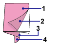

When an album is printed, labels such as "C1" and "C4" are printed as page numbers.
The "C1" and "C4" represent the front cover and back cover, respectively.
|  | C1: Front cover |
C2: Inside the front cover |
|
C3: Inside the back cover |
|
C4: Back cover |
 Note
Note"C2"/"C3" appears only when the Leave the inside of front cover blank/Leave the inside of back cover blank checkbox is selected in the Cover Options dialog.